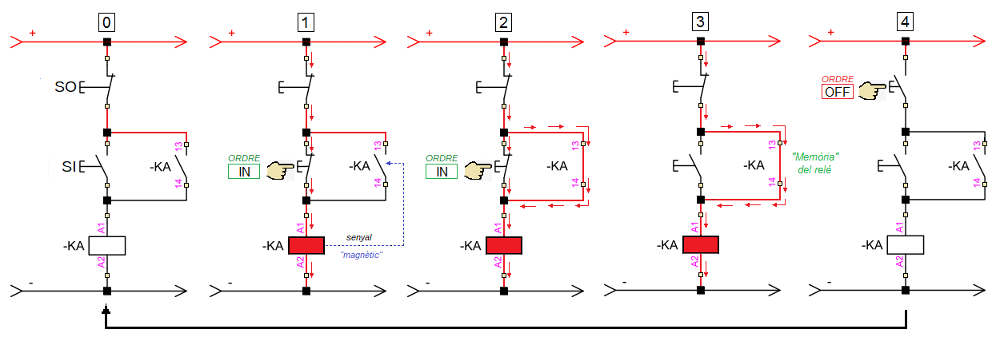

- Activem el Polsador SI (ordre IN). Aleshores, arriba tensió a la bobina i s'activa.
- Al estar activada la bobina, es tanca el contacte NO (13-14) del relé. En aquest moment, el corrent arriba a la bobina per dos camins: pel polsador "SI" TANCAT i pel contacte del relé "13-14" que també està TANCAT.
- Soltem el polsador SI. La bobina del relé continua activada o alimentada pel seu propi contacte "13-14" que continua tancat. A aquest comportament se l'anomena realimentació o memòria del Relé.
- Finalment si volem trencar la realimentació o memòria del relé hem de desactivar la bobina. Això es fa impedint que el corrent elèctric arribe fins a la bobina, es a dir, s'ha de prémer el polsador "OFF" i el circuit torna a la situació inicial "0" de repòs.
Aquest automatisme compleix amb quasi tots els requisits d'un automatisme:
- Incorporar dispositius separats per donar les ordres IN "("en tensió") i OFF ("sense tensió"). En aquest cas utilitzen dos polsadors: SO(polsador NC) i SI (polsador NO).
- Disposar d'un circuit de control (el que activa la bobina del relé) i d'un circuit de potència (el que commuta el motor) independents. D'aquesta manera l'operador pot treballar amb una tensió diferent a la de funcionament del motor i per tant aquesta tensió pot ser una tensió de seguretat, per exemple 24V DC.
- Incorpora un preactuador (relé industrial). És el dispositiu encarregat de fer la commutació del motor (Tensió Perillosa) a partir de les ordres que rep del circuit de control: IN ("en tensió") i OFF ("sense tensió").
- Si la màquina s'atura per qualsevol motiu, tan sols es pot tornar a posar en funcionament mitjançant una nova ordre IN (veure simulació)
- A més aquest automatisme incorpora un element de seguretat adicional: l'ordre OFF sempre té prioritat sobre l'ordre IN, es a dir, si per qualsevol motiu es donen les ordres IN i OFF al mateix temps, l'automatisme ha de mantenir la màquina o procés en estat OFF (veure simulació).
L'únic requisit que li falta al nostre automatisme per poder dir que estem davant d'un vertader sistema automatitzat es incorporar la informació de l'estat de la màquina o procés, es adir, els sensors.
Com que la bobina està activada el contacte 13-14 es tanca i com que el contacte 13-14 està tancat la bobina s'activa.